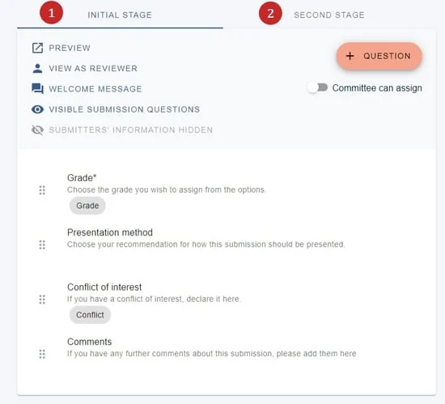

Multi-stage reviews
For event organisersNot an organiser?
The reviews in multi-stage work in the same way as a standard set-up, but you can create separate review forms for each stage.#
submitter, reviewer, delegate etc), please click here .
Go to Event dashboard → Abstract Management → Reviews → Forms & Setup.
It is advised that you become familiar with setting up review forms before you set up your mult-stage review forms. The process is the same, apart from the guidance below.
You wll see a tab for each stage. Simply click on the stage tab you would like to edit.
Unlike the submission forms, the review forms work entirely independently of each other so you can edit, delete and add questions to your requirements.

Did this page solve it?
Thanks — this helps us fix it.
Didn't solve it? Ask our support team
No question is too small, and there's no charge for asking. Raise a ticket and someone who knows the software will pick it up.